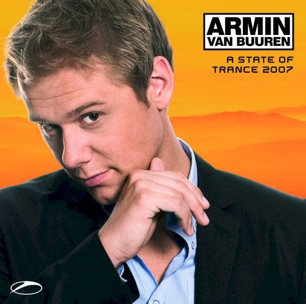

Various Artists - A State of Trance 2007, mixed by Armin van Buuren


Sometimes when an artist reaches a certain level of success, it can be a struggle for them to figure out where they should head from there. This looked like it could pose a threat for Armin van Buuren; he’s risen from his status as underdog among the top trance DJs to the point where last year he snatched the #2 slot in the DJ Mag Poll, is now playing to over 12,000 people at his own event in Rotterdam every year and basically, the object of obsessive fanboy worship from all over the world. Yep, he’s just about as big as Jesus (or maybe even Paul van Dyk if you want to be really controversial), he’s released some crackin’ mix CDs and played many an epic 6-hour+ set. But there’s a sneaky question that rears it’s head: how do you maintain this level of ridiculous success? How do you keep matching the impossible expectations of your fans? There’s a lot resting on the latest installment of his A State of Trance series, and a whole heap of snarling fanboys waiting to pounce if he steps one foot wrong. So has he delivered in 2007?
Looking at what’s included on this year’s CD, Armin has adopted a similar format to 2006 in that the first disc is titled On the Beach – pushing a softer, deeper and even slightly Balearic vibe, just in time for the Ibiza season and matching the sounds of waves crashing on a pristine beach heard briefly in the opening few seconds of the disc. Mash this in with some tough electro basslines, some moody progressive grooves and a breathless vocal or two (or three), then you’ve got a good idea where Armin is coming from with On the Beach. It’s a chance to stretch his legs a little and demonstrate again that he’s about a lot more than just sweeping buildups and euphoric breakdowns.
So what do we have here? If you take it easy and let it wash over you, it’s a disc of such unabashed bliss that you can’t help but be swept away by its charms. There’s more than a few lush vocal singalongs (and DJ Shak’s Who Will Find Me is nothing less than a progressive trance masterpiece), but they’re swapped seamlessly with the darker progressive tunes that, for a DJ who openly states that he doesn’t like to tease his audience with drawn-out stretches of building a vibe, that’s exactly what he’s doing here. But just when you think he’s going to keep the energy at the same muted level from beginning to the end, he brings it up to a peak with Blizzard’s gorgeous Kalopsia before finally loosening the reigns on his trademark euphoria as it reaches its conclusion. Flowed beautifully and programmed to perfection, he’s nailed the tone here and reminded us that he’s the king of controlling the energy levels of a mix. All in all, superb.
But if the first disc is intentionally muted and restrained in many places, then ASOT 07 has a nice balance going on in that the second offering is firing on all cylinders from the word go. This time the title is In The Club but a more appropriate name might have been In The Stadium as Armin’s own Rush Hour kicks things off with a simply massive big room sound. It’s huger than huge, and things continue in this vein with Terry Ferminal vs Mark Sherry Walk Away, albiet a deeper, more percussive form of the stadium trance sound to keep things flowing nicely. The stuttering, chopped-up ethereal vocals in Gareth Emery’s remix of Formentera What are just sublime, while Armin shelves the uplifting melodies for a moment with the hard, driving basslines of Reh Mundi’s Perspective.
Massive as it all may be, it still has a fair amount of deepness that builds into the lush euphoria; Armin’s gentle and refined touch is present from go to woe, meaning it all plays with a lot more sophistication and freshness than your typical by-the-numbers trance. The energy does lull a little towards the middle of the mix – First State’s Evergreen has a symphonic interlude that takes itself way too seriously and some of the momentum is lost with cuts like Mike Foyle’s Firefly, but it’s the calm before the storm. While Aly & Fila’s mix of Whatever is pure trance cheese (of the finest variety of course), the disc rushes towards its conclusion on a classical euphoric note with Sophie Sugar’s Day Seven before wrapping things up with the tough trance rhythms of Sean Tyas’ One More Night Out. All in all, this is a soundtrack for when the club is bursting at the seams at 3am; far from predictable in what’s included but still eminently exciting and satisfying, it’s everything you could want from a peaktime CD.
ASOT 07 solidifies Armin’s presence more than anything else. Things were beginning to fray around the edges a little with last year’s installment as it was looking like he was getting sucked into the formula of endless euro-style buildups with little variation; but that couldn’t be further from the truth here, as it’s the variation and flow that holds your attention. Everyone has their favourites, but if you want to judge it on technical merit alone then ASOT 07 might very well be the best CD that Armin van Buuren has ever put out. That’s up for debate but either way, it’s a shoe in for the best trance CD to hit the shelves this year. Highly recommended.